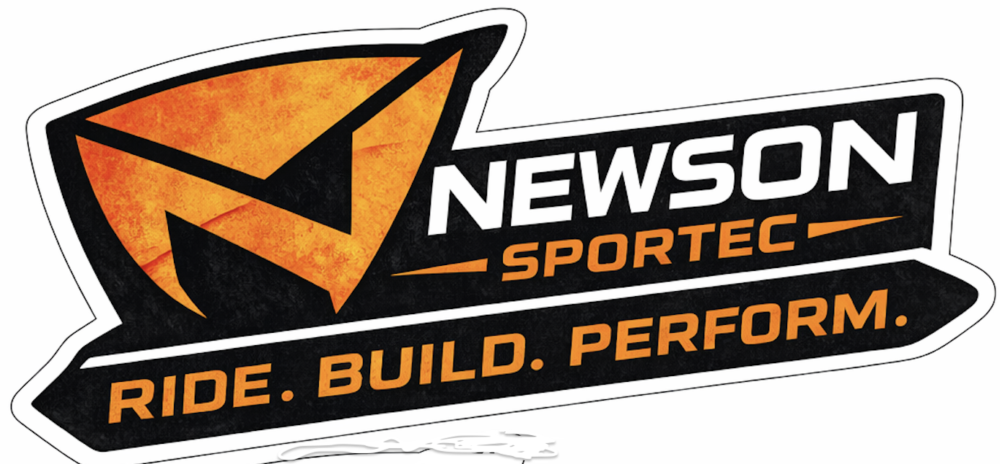

Newson Sportec
Your Logo Flag Waving in the Desert Sky

The Newson Sportec logo is now used as a large waving flag in the sky. It includes moving fabric folds, wind lines, desert dust, and sunset racing energy.

The Newson Sportec logo is now used as a large waving flag in the sky. It includes moving fabric folds, wind lines, desert dust, and sunset racing energy.